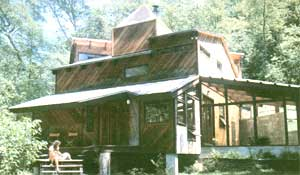
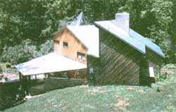
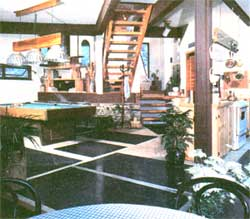
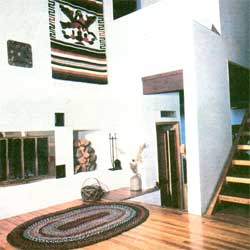
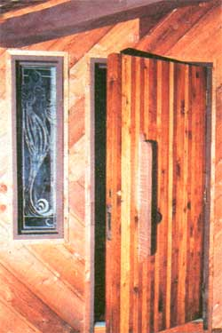

Owner-built doesn't have to mean Spartan, as demonstrated by ...
Back in 1976, Randall Lankford decided to erect a house on a parcel of land nestled in the mountains of North Carolina ...where he'd spent his childhood. Since he had a limited amount of cash available, but enough carpentry experience, ideas, and willing acquaintances to compensate-he felt-for his lack of capital, the determined Tarheel embarked on a building project that wound up involving a lot of swapping and the help of two good friends: designer Jeff Warren and artist Stan Caton (the latter individual contributed a good deal to the aesthetics of the completed structure).
PLANNING PAYS
Randall's initial task was to find a suitable construction site, and-after walking his property and listing the positive and negative aspects of several potential spots-he finally settled on a location that offered accessibility, available water and power, and good solar orientation. Once this chore was out of the way, he bartered with a neighbor ...who, as it turned out, was more than willing to trade his expertise with a bulldozer for the largest of the trees that had to be removed (the remaining felled timber would later heat the Lankford residence for two full years).
That swap, however, was just the first of along series of informal transactions that decreased the Carolinian's dependence on hard cash. Shortly thereafter, in lieu of hiring a crew to do the foundation work, Randall merely hosted a barbecue party at which only one rule prevailed: If you don't work, you don't eat! Needless to say, before the day was over the job was complete ...and as far as we know, there wasn't a single complaint to be heard from the well-fed construction workers.
But Randall's most successful piece of "horse trading" took place when he began scouting about for framing materials ...and discovered that new lumber was just too expensive for his limited budget to handle. "So, we took on a job dismantling a few old warehouses for their roof timbers and blocks, then went on to strip some houses in an area where a new section of highway was coming through. The lumber taken from those to-be-demolished buildings didn't cost us a cent, and all we needed were a few basic tools, a dry storage area, and a '48 Ford pickup! "
Further exchanges helped reduce the cost of the structure, too ...including (once the house was dried in) a swap of carpentry for temporary room and board, and a trade of landscaping services for some of the hardy and plentiful vegetation native to the Lankford homestead's mountain terrain.
A COMMONSENSE PASSIVE DESIGN
The 2,800-square-foot structure (2,200 square feet of it is heated) Purposely wasn't designed to be a "typical" house. For one thing, Randall planned-from the outset-to provide his subsistence heat with wood or coal, and to back that up with whatever solar gain he could realize during the day, so the three-level dwelling had to allow for the unencumbered passage of convected air. To accomplish this, the owner-builder included a raised ceiling directly above his ground-floor great room, and positioned a den and fireplace on an exposed half-story that spans the area between the open space and the building's north wall. Above that, a two-tiered, balconied third level encompasses two bedrooms, a second hearth, a bath, and a sauna ...and is surrounded by several triangular air galleries which encourage a balanced flow of warmed air from the rooms below, while providing access for both natural and artificial light. (The latter is supplied by inconspicuous fixtures made from stovepipe elbows!)
A centrally located woodburning stove furnishes a good deal of the home's heat, and 255 square feet of south-facing glazing-some of it in the form of a window wall-delivers enough solar warmth to raise the interior temperature by nearly 20°, even on particularly cold days. To improve the dwelling's heat reception/ retention capabilities still further, Randall laid sections of dark gray slate (salvaged from a school demolition project) into his insulated concrete slab, installed the chimney that serves his two fireplaces 12 inches away from the nearest wall (and filled the cavity behind it with insulation) to prevent heat loss, and is in the process of glassing in a greenhouse, which should-with its additional 275-square-foot faceprove to be a reliable and welcome source of heat during the coming cold season. (An accomplished scrounger, Randall informed us that sizable sections of super-thick glazing can sometimes be had-at bargain-basement prices from local shopping centers or malls where, for insurance purposes or aesthetic reasons, perfectly good plateglass storefronts and display kiosks are often routinely replaced when a new tenant moves in! )
Of course, the same design features that allow even distribution of wintertime heat likewise provide a source of summer cooling ...creating, in effect, a thermal chimney. By leaving the uppermost operational windows in his house open from April through early fall, Randall can be sure that whatever sun enters through the overhang-shaded south-facing glass wall will warm the interior air shafts sufficiently to create an upward movement of the solar-tempered air ...thus drawing the cooler ground-level accumulation skyward, past the various floors and eventually out the open ports.
The structure is also well insulated, a factor which helps it resist swings in temperature. Its major portion stands on a protected slab, but the rest, which is supported on an overhang, is buffered underneath with a solid foot of batting. Furthermore, the full 2 X 6 wallframing studs allow ample room for 6"fiberglass batts, and the exterior is protected .with a layer of 3/4" polystyrene beneath its commercial cedar siding.
The roof on top of the non-slab-based "projection" is also insulated, to a depth of 12". The rest of the home's upper covering consists of an exposed layer of 2 X 6 tongue-and-groove fir (which constitutes the ceiling) ...two sheets of felt placed over 1-1/2" polystyrene panels ...a layer of 5/8" plywood sheathing plus an additional two thicknesses of felt ...and last of all, the exterior roofing itself: a commercial material known as Cooper's Multi-Purpose Membrane. (This substitute for shingles-designed to have a 25year lifespan-is made of quilted aluminum sheets, with asphalt inner layers, bonded together with plastic. It's applied to the roof with mastic, and features edges that seal to wood or to each other when heated ...producing vulcanized seams that are said to be impervious to water.)
One of the most noticeable features of the home, however, is the oak flooring, which was salvaged from houses Randall's small crew helped tear down: "We just numbered and named the back of the boards according to whatever rooms they came out of, and reinstalled them where they fit best. If we hadn't taken the trouble to mark them, we would have wasted time later, since flooring from high-traffic areas-such as kitchens-is always more worn than is that from less used rooms ...which means that, had we jumbled it together, we'd have had to do a lot of sanding to even things up."
HE'S READY TO DO IT AGAIN
After living in his house for several seasons, and having had a chance to reflect on the benefits and difficulties posed by the owner-built approach to home proprietorship, Randall still believes that it's a good way to avoid some of the hassles that occur when buying a home in a more conventional manner. "Except for the fact that I'm single, and thus not burdened with family responsibility, I faced the same problems most folks do and had to make some serious decisions-such as whether to procure a bank loan and take a leave of absence from my job before embarking on my project. I also relied heavily on some good friends and my relatives, and it still took longer than I expected to bring the house to completion. On the other hand, though, my home's been appraised at about two and a half times what I've put into it-in cash-and I have the satisfaction of having done it the way I wanted to, because I shared every aspect of the job with a designer who was just as interested in the result as I was."
And what-you may ask-is next on Mr. Lankford's agenda? Well, he's planning to build another house on a nearby ridge, where he can get an hour or two more sunlight for more effective solar heating. His first dwelling is for sale to someone who can appreciate an attractive, handcrafted, energy-saving structure tucked away in the mountains near Penrose, North Carolina.
|
 [1] It's hard to believe that this house was built mostly from scrap materials. |
 [3] The multi-angled roof is covered with a commercially available, weather-resistant, layered membrane. |
 [2] The kitchen and the den have a southern exposure to take advantage of morning insolation. Note the slate flooring ...salvaged from a school demolition project. |
|
 [4] Hardwood floors and an insulated fireplace add both beauty and warmth to the den. |
 [5] This etched glass sidelight and handmade door enhance the Lankford home's entry. |
|